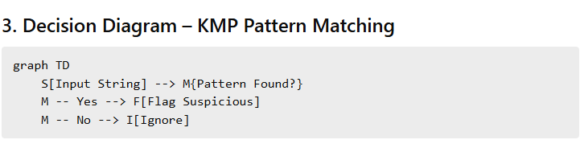
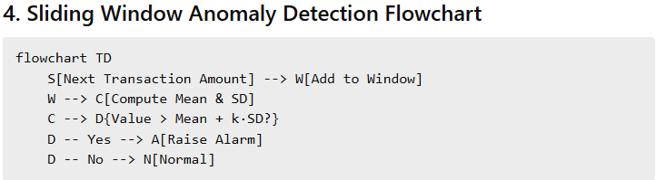

Module 4 – Smart Tax Collection & Fraud Detection
Real-World Input Data (JSON)
Instead of hardcoding transactions and account relationships, this module uses JSON input files that represent real tax and financial data. This allows scalable fraud analysis on large datasets.
Transaction History Input
{
"transactions": [
{ "id": "TX101", "amount": 1200, "date": "2024-01-10" },
{ "id": "TX102", "amount": 1250, "date": "2024-01-11" },
{ "id": "TX103", "amount": 9800, "date": "2024-01-12" },
{ "id": "TX104", "amount": 1300, "date": "2024-01-13" }
]
}
Account Network Input
{
"accounts": [0,1,2,3,4],
"links": [
{ "from": 0, "to": 1, "amount": 5000 },
{ "from": 1, "to": 2, "amount": 7000 },
{ "from": 2, "to": 3, "amount": 15000 },
{ "from": 3, "to": 1, "amount": 12000 }
]
}
- Transactions → anomaly & pattern detection
- Accounts & links → fraud network analysis
- External files → real-world scalability
A. Fraud Pattern Detection
Detects fraudulent behavior by combining textual pattern matching, temporal anomaly detection, and influence analysis.
How the Algorithm Works
KMP scans transaction descriptions for suspicious phrases.
A sliding-window z-score flags abnormal transaction amounts.
PageRank identifies influential fraud hubs in the transaction graph.
Efficiency Analysis
| Technique | Time | Space |
|---|---|---|
| KMP | O(n + m) | O(m) |
| Sliding Window | O(L) | O(W) |
| PageRank | O(E × iter) | O(V + E) |
B. Network Analysis & Audit Prioritization
Identifies colluding taxpayers, isolates large illegal money flows, and prioritizes audits under limited resources.
How the Algorithm Works
Union-Find clusters suspicious accounts.
Max-flow identifies high-value transfer paths.
Knapsack DP selects audits that maximize recovered revenue.
Efficiency Analysis
| Algorithm | Time | Space |
|---|---|---|
| Union-Find | ≈ O(α(V)) | O(V) |
| Dinic | O(E√V) | O(V + E) |
| Knapsack | O(n × budget) | O(budget) |
Integrated C++ Code – Tax Fraud Module
// ================= FRAUD PATTERN DETECTION =================
#include <bits/stdc++.h>
using namespace std;
// ---------- KMP ----------
vector<int> build_lps(const string &p){
int m=p.size(); vector<int> lps(m,0);
for(int i=1,len=0;i<m;){
if(p[i]==p[len]) lps[i++]=++len;
else if(len) len=lps[len-1];
else lps[i++]=0;
}
return lps;
}
// ---------- Sliding Window ----------
vector<int> sliding_window(const vector<double>&a,int W,double k){
deque<double> dq; double sum=0,sq=0; vector<int> alarms;
for(int i=0;i<(int)a.size();++i){
dq.push_back(a[i]); sum+=a[i]; sq+=a[i]*a[i];
if((int)dq.size()>W){
double x=dq.front(); dq.pop_front();
sum-=x; sq-=x*x;
}
if(dq.size()>=5){
double mean=sum/dq.size();
double var=sq/dq.size()-mean*mean;
double sd=sqrt(max(0.0,var));
if(sd>0 && a[i]>mean+k*sd) alarms.push_back(i);
}
}
return alarms;
}
// ---------- PageRank ----------
vector<double> pagerank(const vector<vector<int>>&adj){
int n=adj.size();
vector<double> pr(n,1.0/n), tmp(n);
for(int it=0;it<50;it++){
fill(tmp.begin(),tmp.end(),0);
for(int u=0;u<n;u++)
for(int v:adj[u])
tmp[v]+=pr[u]/adj[u].size();
for(int i=0;i<n;i++)
pr[i]=0.15/n+0.85*tmp[i];
}
return pr;
}
>Flowcharts and Decision Diagrams


